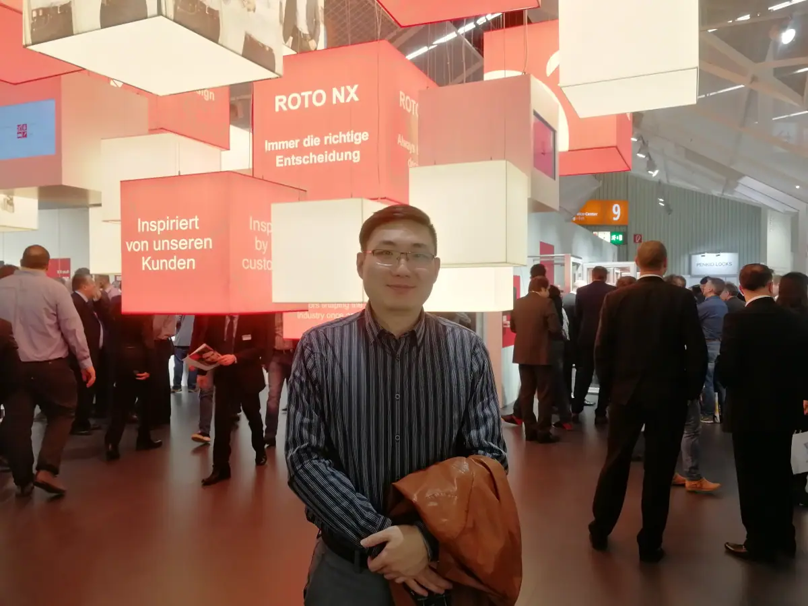
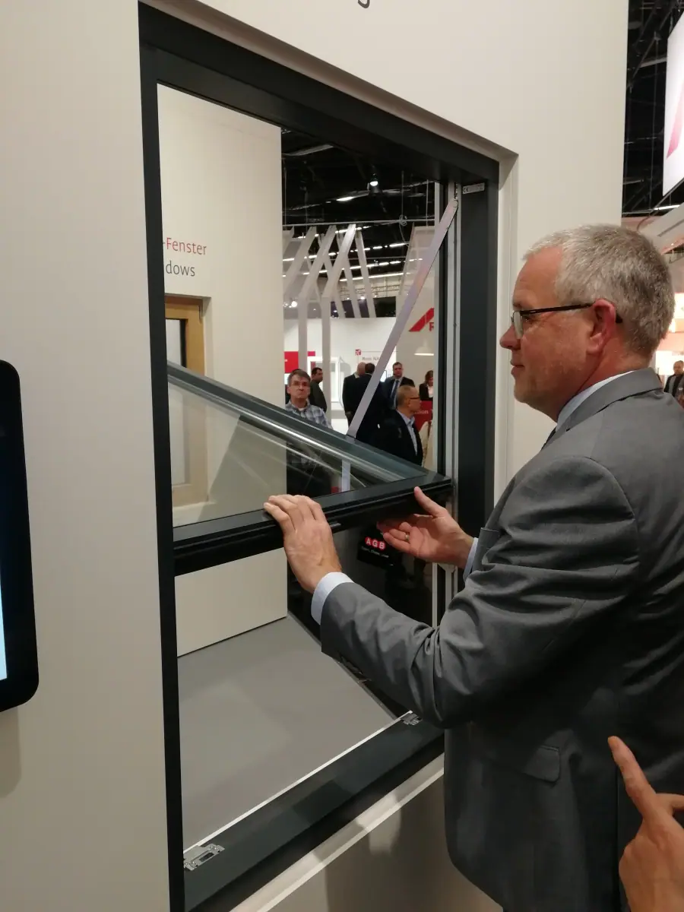
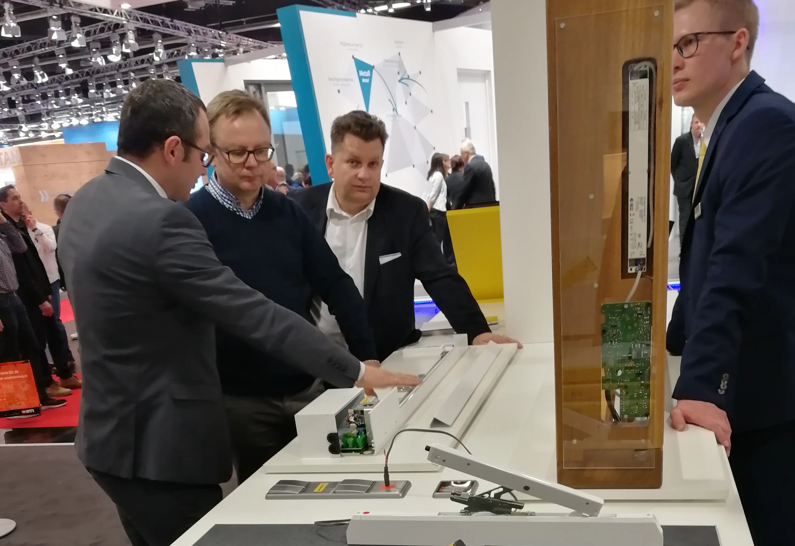
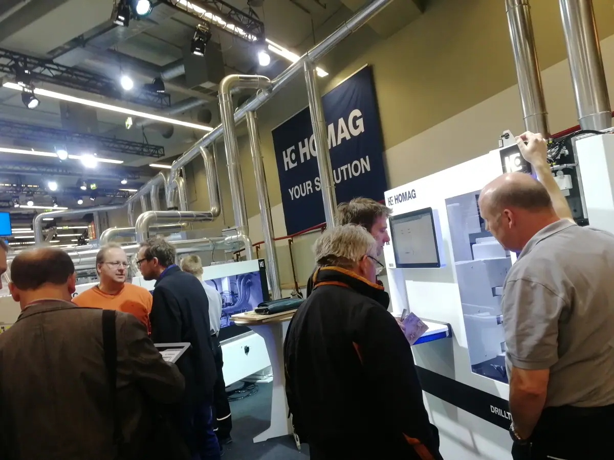
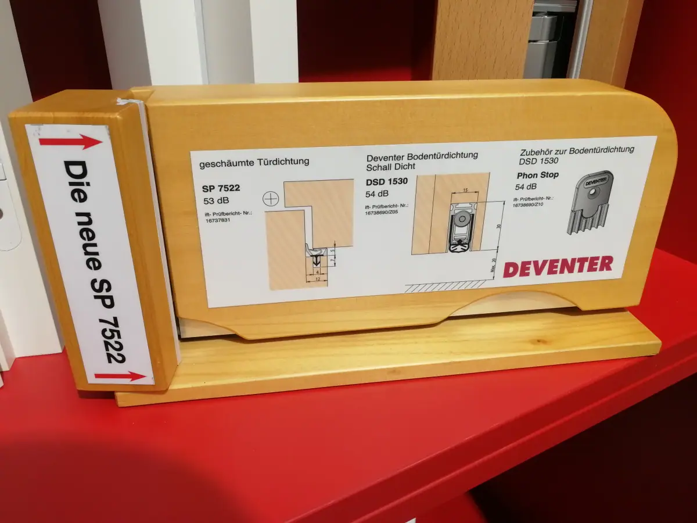

纽伦堡：第三次站在这里，看到的不再只是产品，是中国企业的腰板
Nuremberg, the third time — no longer just products, but the backbone of Chinese companies.

（2018 年 · 德国 · 纽伦堡 · FENSTERBAU FRONTALE 第三次回访）
2018 年第三次站在纽伦堡的展馆里，眼前的场景已与前两次不同。2012 年第一次来，关注的是产品和标准；2016 年再次到访（2014 年也曾到过，但没有单独成篇），诺托在旁边搭起一大片帐篷举办诺托之夜，现场有烤猪肘和啤酒；到了 2018 年，照片背景中出现了刚刚正式亮相的 Roto NX。
Roto NX：憋了七年的一次「全系统」重做
Roto NX 被视为诺托五金系统的一次重要革新。该系统于 2017 年 11 月对外发布，并在 2018 年 3 月 21 日至 24 日的纽伦堡展会上集中面向全球客户和经销商展示。照片背景中的展台很可能呈现了这一阶段的公开展示现场。诺托展位围绕经济性、安全性、舒适性与设计感展开，重点介绍可覆盖塑钢、木质和铝合金等不同框架材质的平开上悬窗五金系统。若与往届照片对照，展台上系统窗相关项目和产品展示似乎更为丰富。这也与《诺托第三次回访》中记录的经营背景形成呼应：2016 年，诺托面临营收下滑并进行逆周期并购；两年后，Roto NX 成为其产品体系更新的重要一步。


展馆里的中国企业：从「来看」到「来站」
比产品更值得留意的，是这次展会上中国企业参与方式的变化：除了参观和采购，也有企业开始直接参展，并设立欧洲分公司。2018 年这届 FENSTERBAU FRONTALE 吸引了来自 40 多个国家的 814 家参展商，专业观众超过 11 万人。在这样的国际行业展会上设立展位，需要承担相应的投入和市场开发成本。中国企业的参与度提高，至少说明一部分企业正尝试从产品出口走向更直接的海外市场经营；至于其整体实力是否已足以与欧洲同行全面竞争，还需结合企业和产品具体判断。


但「上台阶」和「该往哪走」是两件事
参加纽伦堡展会并在欧洲设立分公司，确实是企业国际化进程中的一个台阶。欧洲市场在门窗五金领域拥有深厚的技术积累，但对不少中国企业而言，出海第一站未必非要选择欧洲。先在东南亚等距离、成本结构或市场环境相对适配的地区验证产品和管理能力，再逐步进入欧美、非洲或拉美等市场，也是一种值得评估的路径。
站上全球技术高地固然令人兴奋，但最高水平不一定是企业最适合迈出的第一步——出海要按难度台阶，一级一级往上走。
——董立鑫 海鑫汇创始人兼执行总裁，新加坡世贸秘书长兼首席运营官
写在最后
三次站在同一个展馆里，产品从传统五金发展到 Roto NX，参展商结构也在变化，中国企业的身影越来越多。反复观察同一个行业之后，关注点也会从产品本身转向市场选择与进入路径：欧洲代表着较高的技术水平，却不一定是所有企业最合适的第一站。看得越多，越需要把经验转化为对后来者有用的判断，而不是简单地把成熟市场当作唯一目标。
本文整理自董立鑫（Bruce Dong）海外产业考察记录，首发于海鑫汇。